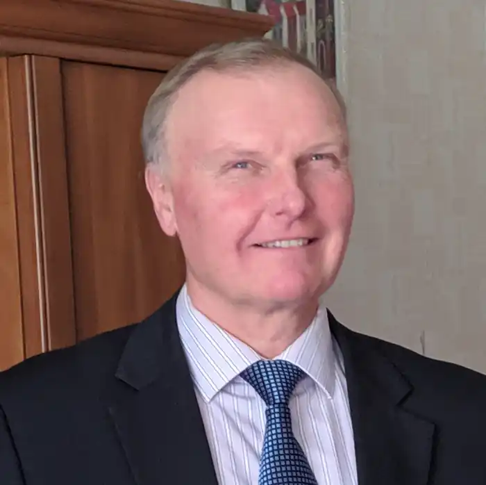

Народився 18 січня 1964 року в с. Томаківка Дніпропетровської області. Про цю подію пише так: "Моє народження стало можливим тільки "завдяки" тому, що батько 1941 року був репресований і спочатку засуджений, а після відбуття терміну покарання – засланий до Сибіру, де він зустрів мою маму". Саме хитросплетінням нелегкого, але яскравого батькового життя присвячено біографічний роман "Камінь", написанням якого Володимир Шабля займався останні 16 років.
Окрім письменництва, він є автором пісень і музики, поетом, ученим, викладачем в університеті.
Змалечку жив із дідом та бабою в селищі Томаківка, поки батьки-вчителі поневірялися у пошуках роботи. Адже репресований батько, незважаючи на реабілітацію, довго не міг улаштуватися за фахом. Потім, з 4-річного віку, переїхав до села Чумаки Томаківського району, куди батьків ризикнув узяти вчителями директор місцевої школи. У 1981 році Володимир Шабля закінчує із "золотою медаллю" Чумаківську середню школу; у 1986 році – Дніпропетровський сільськогосподарський інститут із відзнакою. Працює головним зоотехніком колгоспу в Кіровоградській області. Потім служить в армії на Далекому Сході СРСР. Після армії вступає до аспірантури Інституту тваринництва НААН, де займається науковою діяльністю протягом наступних 27 років. Проходить шлях від аспіранта до доктора сільськогосподарських наук, завідувача відділу. Нині працює професором у Державному біотехнологічному університеті. Про свою письменницьку діяльність В. П. Шабля пише: "Хоча в мені тече і українська, й російська, а можливо, і ще якась кров, вважаю себе українцем. Адже я народився та прожив майже все життя в Україні. Я люблю свою Батьківщину та поважаю коріння всіх моїх предків. Мені гірко усвідомлювати, що зараз навіть родичі, які живуть у сусідніх країнах, часто не сприймають позицій один одного. На жаль, багато хто з нас продовжує вважати, що знає, як потрібно правильно жити, і намагається насаджувати своє бачення іншим. До яких плачевних наслідків це призводить – виразно показує зовсім недавня історія наших батьків і дідів, а також нинішня війна між Росією та Україною. Але ми чомусь часто продовжуємо вперто ігнорувати уроки історії та сьогодення, весь час наступаючи на ті самі граблі. Мій біографічний роман "Камінь" – данина вдячності та поваги моєму батькові, котрий, незважаючи на 17 років поневірянь у таборах та засланнях, не зламався й залишився Людиною з великої літери. Коли я задумав написати цю книгу, виявилося, що я – чи не єдиний, і вже точно найобізнаніший, носій інформації про його трагічне життя, у тому числі про голод, колективізацію, війну, репресії, табори. Ще дитиною я запам'ятав багато розповідей та особистих історій з життя вже стареньких на той момент моїх бабусь, дідусів, близьких, друзів та сусідів. Після того, як тато пішов у засвіти, я вирішив, що зобов'язаний залишити відому мені інформацію про радощі та прикрощі життя людей у минулому столітті для нинішнього та наступних поколінь: це може стати моїм внеском у їхнє щасливе майбутнє. Адже знаючи про зовсім недавні, розказані звичайними людьми, жахіття воєн та репресій, вони матимуть більше шансів не повторювати помилок предків".